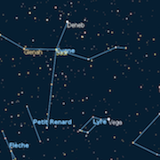
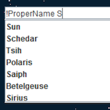
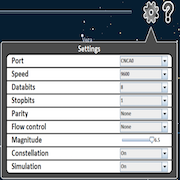
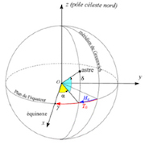
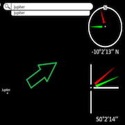

Star2 Github Project Github Simulator
Planetarium software displays the current view of the sky at the present location.
Java
This project is about a star pointer that enables you to observe the sky, including the stars and constellations. The star pointer consists of an embedded PIC board, which is connected to a computer via RS-232. Subsequently, we developed a simulator for the Android operating system. The computer receives orientation information from either the PIC board or the simulator. With this data, we can compute the celestial map and display it, allowing you to view the stars, constellations, the moon (with its various phases), and the sun. By clicking on their respective images, you can access further information about stars or constellations. Additionally, we have incorporated a search engine to facilitate the location of specific stars and constellations.
The Project
Sky visualisation
The sky is actually a complete sphere, from which we can only see a small part at any given time. To represent that sphere on a flat computer screen, it is necessary to project coordinates from spherical representation to planar representation. Many techniques exist in order to accomplish this. We used a standard planar projection. Spherical coordinates are simply taken as polar coordinates on a mathematical XY plane, which is then displayed with a zoom factor on the rectangular screen. Movements consist of rotating around the central point, moving up or down, and zooming in to see more stars.
 Configure settings to access PIC controller settings and use queries for accessing large database
To communicate with the PIC controller, a varying number of parameters needs to be specified. In order to achieve flexibility and utilize different types of "star pointers," you can select values for different settings. Star2 contains over 120,000 stars visible with a telescope from the Earth's surface. To facilitate the selection of stars the user wants to display, they can use queries to filter the desired stars.
 Mathematic operations
Mathematics is present in almost every part of the project. The projection of the sky from a sphere to a plane uses mathematics. The computation of star coordinates from generic static ones to current sky-specific ones uses mathematics. Gathering altitude and azimuth angles from X, Y, and Z vectors coming from hardware accelerometers embedded on a star pointer uses mathematics. Computing universal time based on local time and the abstract epoch notion uses mathematics. We developed all the needed formulas during the development process. With all of this, you can compute the necessary information if you want to point a specific star.
Miscellaneous
| Type | Course project |
| Degree | B.Sc. HE-Arc, 1st year |
| Course | - |
| Duration | ~240 hours |
| Supervisor | Prof. François Tièche |
| Co-developers | Alexandre Perez, Sébastien Vauchez, Issa Barbier, Loris Ceschin |